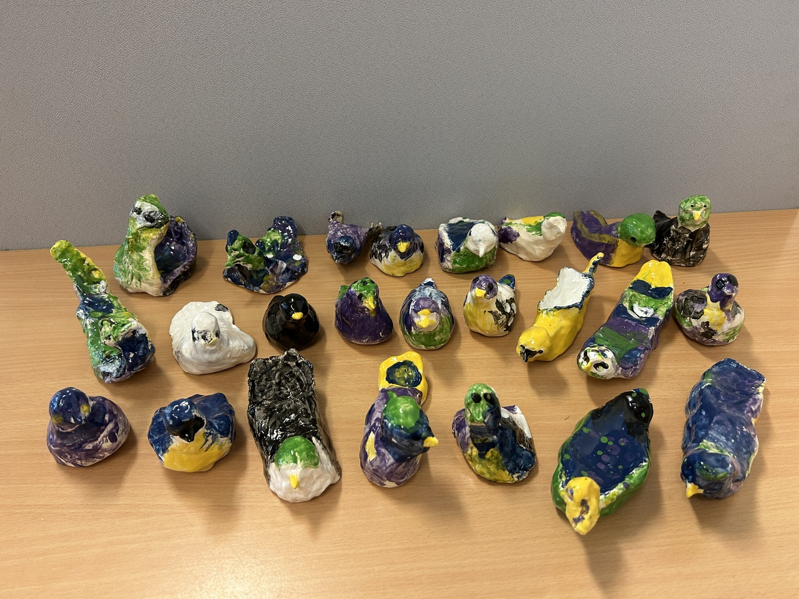
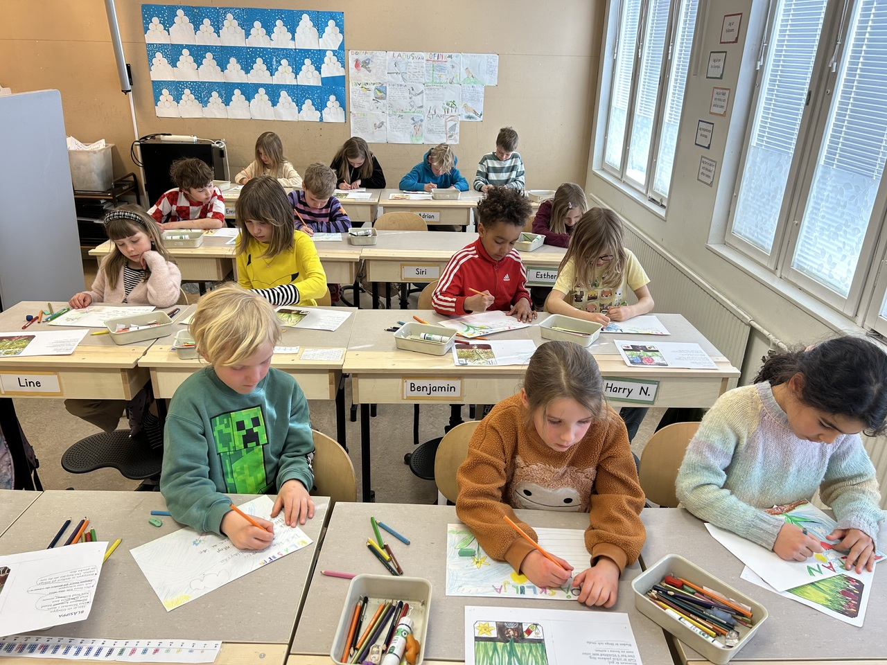
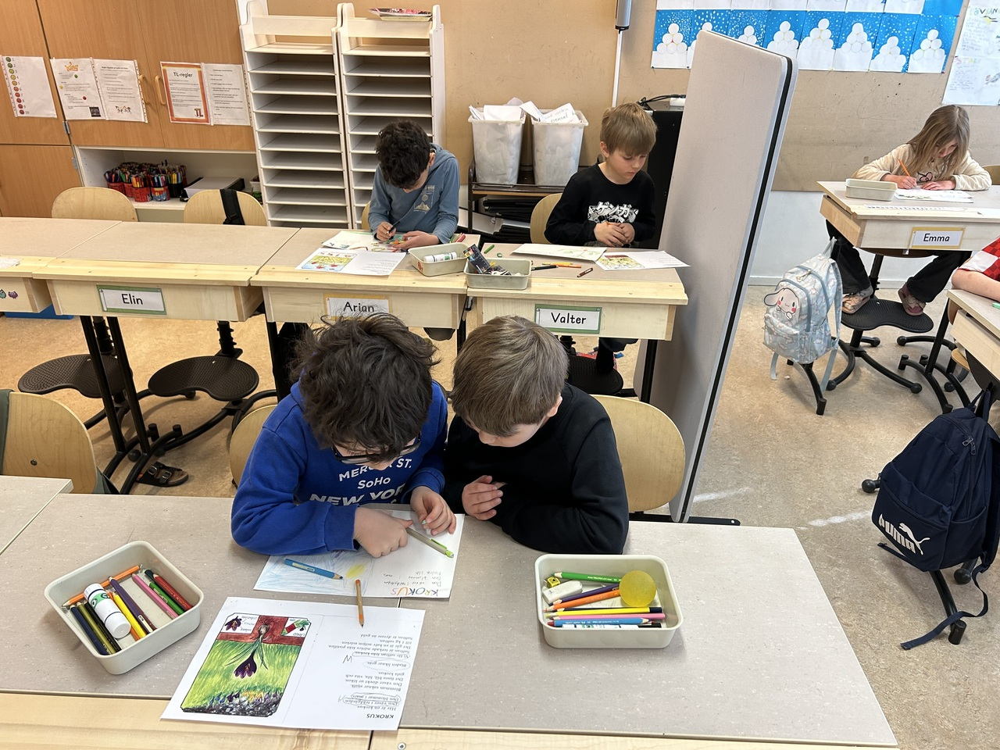

Hallo Eltern!
Nun sind alle Entwicklungsgespräche abgeschlossen. Das nächste Gespräch findet im Herbst statt. Die Lernziele der Kinder und Meine Entwicklung findet ihr auf Unikum unter dem Reiter Gespräche.
Wochenarbeit
Wir haben weiter geübt, Rechenaufgaben mit Addition und Subtraktion bis 20 zu lösen. Wir haben uns die Beziehung zwischen diesen Rechenarten und die Verwendung des Gleichheitszeichens angeschaut. In "Wort und Abenteuer" war der Buchstabe der Woche Uu und das Märchen handelte von der Eule Ulla. In "Zick Zack" haben wir mit den Monaten gearbeitet und in Englisch haben wir uns den nächsten Pic a colour angesehen. In Technik haben wir uns die Technikpatrouille angeschaut. In Naturkunde haben wir über Blumen gelernt. Letzten Mittwoch gingen wir nach dem Mittagessen nach draußen, um zu sehen, ob wir die ersten Frühlingsblumen finden konnten, und anschließend hatten die Kinder eine Weile freies Spiel. Heute haben die Kinder Informationen über je eine Blume gelesen, die sie anschließend gezeichnet und zu der sie einen Text verfasst haben. Einige Kinder arbeiteten paarweise. Kunst + Naturkunde: Die Kinder haben gestern ihre Vogelbilder aus Ton bemalt. Heute sind sie fertig, und die Kinder haben sie mit nach Hause genommen. Ich hoffe, sie halten sie vollständig in ihren Schulranzen.
In KiVa haben wir darüber gesprochen, wie man ein guter Freund ist, da sich gezeigt hat, dass einige Kinder ärgern, andere am Türgriff festhalten, damit einige nicht hereinkommen können, einige laut sprechen, während andere im Klassenzimmer umherlaufen und stören, und andere schließen auch andere Kinder in den Pausen aus. Also haben wir über verschiedene Strategien gesprochen, die den Kindern helfen können, wenn sie Probleme lösen wollen. Wichtig ist, dass man lernt, einander zuzuhören, ohne verärgert zu werden, wenn ein Freund auf etwas hinweist, das man tut und was nicht in Ordnung ist. Wir hatten diese Woche auch den "Geheimen Freund", was bedeutet, dass jedes Kind ein geheimer Freund für jemanden in der Klasse war, der nicht wusste, wer diese Person war. Die Aufgabe war, etwas Nettes für seinen Freund zu tun. Heute haben die Kinder erzählt, wer ihr geheimer Freund war. Die Kinder fanden diese Aufgabe toll, und wir werden sie mehrmals wiederholen.
Hausaufgaben bis nächsten Donnerstag: Lest Kapitel 23 und schreibt Antworten sowie macht Nomp (Mathe-Hausaufgaben). Die Kinder, die vergessen haben, den Nomp dieser Woche zu machen, müssen ihn in der Schule nachholen.
Information
Der Hort sendet eine Erinnerung, dass der letzte Tag zur Beantwortung des Ferienplans auf Skola24 für die Osterferien nun Sonntag, der 23. März, ist.
Montag, der 24.3., ist ein Studientag, die Kinder haben keine Schule, der Hort ist wie gewohnt geöffnet.
Mehrere Kinder kommen zu mir, um ihre wundgeschundenen Hände und Finger zu zeigen. Wenn dein Kind salbenbedürftige Hände hat, solltest du vielleicht eine Salbe in den Schulranzen packen. Gleiches gilt für Sonnencreme, falls dein Kind diese benötigt.
Aktualisiere bitte die Ersatzkleidung für dein Kind im Schulranzen, da das Kind eventuell herausgewachsen ist. Schau auch im "Kvarglömt" im Garderobenraum nach, da dort viele Winterkleider liegen. Vielleicht findet der Besitzer sie wieder.
Woche 15, Freitag, der 11.4., werden wir einen Kuscheltier-Tag haben.
Woche 16 haben wir Osterferien.
Schönes Wochenende wünscht Andrea
andrea.lingman@skola.uppsala.se
Die Abwesenheitsmeldung auf Skola24 erfolgt vor 08.00 Uhr unter 0515 777 601 oder in der App an jedem Fehltag.
  